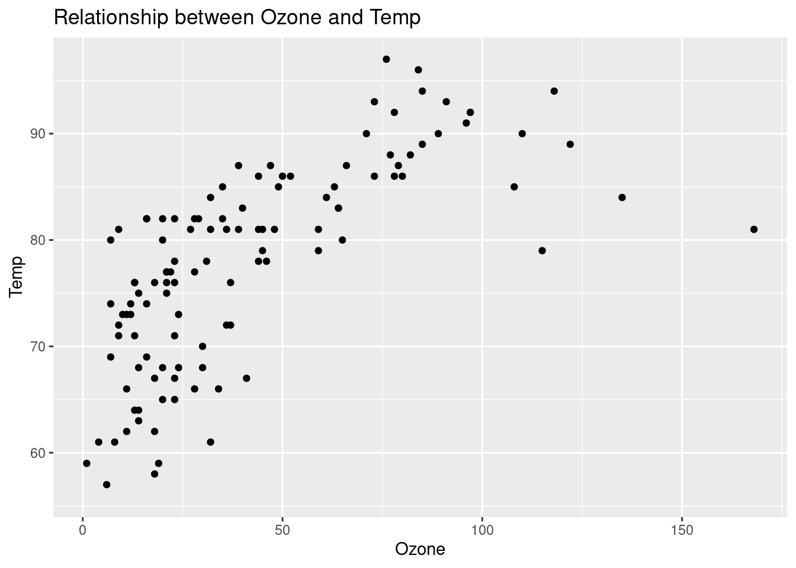

Chapter 5 Automating repeated things
Anything that can be automated should be automated. Do as little as possible by hand. Do as much as possible with functions. - Hadley Wickam
5.1 Why functional programming
- Setup
## Loading required package: pacmanpacman::p_load(
tidyverse, # tidyverse pkgs including purrr
tictoc, # performance test
broom, # tidy modeling
glue, # paste string and objects
furrr, # parallel processing
rvest, # web scraping
devtools, # dev tools
usethis, # workflow
roxygen2, # documentation
testthat) # testing 5.1.1 Why map?
5.1.1.1 Objectives
- How to use
purrrto automate workflow in a cleaner, faster, and more extendable way
5.1.1.2 Copy-and-paste programming
Copy-and-paste programming, sometimes referred to as just pasting, is the production of highly repetitive computer programming code, as produced by copy and paste operations. It is primarily a pejorative term; those who use the term are often implying a lack of programming competence. It may also be the result of technology limitations (e.g., an insufficiently expressive development environment) as subroutines or libraries would normally be used instead. However, there are occasions when copy-and-paste programming is considered acceptable or necessary, such as for boilerplate, loop unrolling (when not supported automatically by the compiler), or certain programming idioms, and it is supported by some source code editors in the form of snippets. - Wikipedia
Example
Let’s imagine
dfis a survey dataset.a, b, c, d= Survey questions-99: non-responsesYour goal: replace
-99withNA
# Data
set.seed(1234) # for reproducibility
df <- tibble(
"a" = sample(c(-99, 1:3), size = 5, replace = TRUE),
"b" = sample(c(-99, 1:3), size = 5, replace = TRUE),
"c" = sample(c(-99, 1:3), size = 5, replace = TRUE),
"d" = sample(c(-99, 1:3), size = 5, replace = TRUE)
)# Copy and paste
df$a[df$a == -99] <- NA
df$b[df$b == -99] <- NA
df$c[df$c == -99] <- NA
df$d[df$d == -99] <- NA
df## # A tibble: 5 x 4
## a b c d
## <dbl> <dbl> <dbl> <dbl>
## 1 3 3 3 1
## 2 3 2 3 1
## 3 1 NA 1 2
## 4 1 NA 2 1
## 5 NA 1 1 3- Challenge. Explain why this solution is not very efficient (Hint: If
df$a[df$a == -99] <- NAhas an error, how are you going to fix it? A solution is not scalable if it’s not automatable.
5.1.1.3 Using a function
Let’s recall what’s function in R:
input + computation + outputIf you write a function, you gain efficiency because you don’t need to copy and paste the computation part.
` function(input){
computation
return(output) } `
# Function
fix_missing <- function(x) {
x[x == -99] <- NA
x
}
# Apply function to each column (vector)
df$a <- fix_missing(df$a)
df$b <- fix_missing(df$b)
df$c <- fix_missing(df$c)
df$d <- fix_missing(df$d)
df## # A tibble: 5 x 4
## a b c d
## <dbl> <dbl> <dbl> <dbl>
## 1 3 3 3 1
## 2 3 2 3 1
## 3 1 NA 1 2
## 4 1 NA 2 1
## 5 NA 1 1 3Challenge Why using function is more efficient than 100% copying and pasting? Can you think about a way we can automate the process?
Many options for automation in R:
for loop,applyfamily, etc.Here’s a tidy solution comes from
purrrpackage.The power and joy of one-liner.
## # A tibble: 5 x 4
## a b c d
## <dbl> <dbl> <dbl> <dbl>
## 1 3 3 3 1
## 2 3 2 3 1
## 3 1 NA 1 2
## 4 1 NA 2 1
## 5 NA 1 1 3map() is a higher-order function that applies a given function to each element of a list/vector.

This is how map() works. It’s easier to understand with a picture.
- Input: Takes a vector/list.
- Computation: Calls the function once for each element of the vector
- Output: Returns in a list or whatever data format you prefer (e.g., `_df helper: dataframe`)- Challenge If you run the code below, what’s going to be the data type of the output?
## $a
## [1] 3 3 1 1 NA
##
## $b
## [1] 3 2 NA NA 1
##
## $c
## [1] 3 3 1 2 1
##
## $d
## [1] 1 1 2 1 3- Why
map()is a good alternative tofor loop.
The Joy of Functional Programming (for Data Science) - Hadley Wickham
# Built-in data
data("airquality")
tic()
# Placeholder
out1 <- vector("double", ncol(airquality))
# Sequence variable
for (i in seq_along(airquality)) { #
# Assign a computation result to each element
out1[[i]] <- mean(airquality[[i]], na.rm = TRUE)
}
toc()## 0.007 sec elapsed## 0.002 sec elapsedIn short,
map()is more readable, faster, and easily extendable with other data science tasks (e.g., wrangling, modeling, and visualization) using%>%.Final point: Why not base R
applyfamily?Short answer:
purrr::map()is simpler to write. For instance,
map_dbl(x, mean, na.rm = TRUE) = vapply(x, mean, na.rm = TRUE, FUN.VALUE = double(1))
5.1.1.4 Application (many models)
- One popular application of
map()is to run regression models (or whatever model you want to run) on list-columns. No more copying and pasting for running many regression models on subgroups!
# Have you ever tried this?
lm_A <- lm(y ~ x, subset(data, subgroup == "group_A"))
lm_B <- lm(y ~ x, subset(data, subgroup == "group_B"))
lm_C <- lm(y ~ x, subset(data, subgroup == "group_C"))
lm_D <- lm(y ~ x, subset(data, subgroup == "group_D"))
lm_E <- lm(y ~ x, subset(data, subgroup == "group_E"))- For more information on this technique, read the Many Models subchapter of the R for Data Science.
# Function
lm_model <- function(df) {
lm(Temp ~ Ozone, data = df)
}
# Map
models <- airquality %>%
group_by(Month) %>%
nest() %>% # Create list-columns
mutate(ols = map(data, lm_model)) # Map
models$ols[1]## [[1]]
##
## Call:
## lm(formula = Temp ~ Ozone, data = df)
##
## Coefficients:
## (Intercept) Ozone
## 62.8842 0.1629# Add tidying
tidy_lm_model <- purrr::compose( # compose multiple functions
broom::tidy, # convert lm objects into tidy tibbles
lm_model
)
tidied_models <- airquality %>%
group_by(Month) %>%
nest() %>% # Create list-columns
mutate(ols = map(data, tidy_lm_model))
tidied_models$ols[1]## [[1]]
## # A tibble: 2 x 5
## term estimate std.error statistic p.value
## <chr> <dbl> <dbl> <dbl> <dbl>
## 1 (Intercept) 62.9 1.61 39.2 2.88e-23
## 2 Ozone 0.163 0.0500 3.26 3.31e- 35.2 Automote 2 or 2+ tasks
5.2.1 Objectives
- Learning how to use
map2()andpmap()to avoid writing nested loops.
5.2.2 Problem
- Problem: How can you create something like below?
[1] “University = Berkeley | Department = waterbenders”
[1] “University = Berkeley | Department = earthbenders”
[1] “University = Berkeley | Department = firebenders”
[1] “University = Berkeley | Department = airbenders”
[1] “University = Stanford | Department = waterbenders”
[1] “University = Stanford | Department = earthbenders”
[1] “University = Stanford | Department = firebenders”
[1] “University = Stanford | Department = airbenders”
- The most manual way: You can copy and paste eight times.
## [1] "University = Berkeley | Department = CS"5.2.3 For loop
A slightly more efficient way: using a for loop.
Think about which part of the statement is constant and which part varies ( = parameters).
Do we need a placeholder? No. We don’t need a placeholder because we don’t store the result of iterations.
Challenge: How many parameters do you need to solve the problem below?
# Outer loop
for (univ in c("Berkeley", "Stanford")) {
# Inner loop
for (dept in c("waterbenders", "earthbenders", "firebenders", "airbenders")) {
print(paste("University = ", univ, "|", "Department = ", dept))
}
}## [1] "University = Berkeley | Department = waterbenders"
## [1] "University = Berkeley | Department = earthbenders"
## [1] "University = Berkeley | Department = firebenders"
## [1] "University = Berkeley | Department = airbenders"
## [1] "University = Stanford | Department = waterbenders"
## [1] "University = Stanford | Department = earthbenders"
## [1] "University = Stanford | Department = firebenders"
## [1] "University = Stanford | Department = airbenders"- This is not bad, but …
narguments ->n-nested for loops. As a scale of your problem grows, your code gets really complicated.
To become significantly more reliable, code must become more transparent. In particular, nested conditions and loops must be viewed with great suspicion. Complicated control flows confuse programmers. Messy code often hides bugs. — Bjarne Stroustrup
5.2.4 map2 & pmap
Step 1: Define inputs and a function.
Challenge Why are we using
rep()to create input vectors? For instance, foruniv_listwhy not just usec("Berkeley", "Stanford")?
# Inputs (remember the length of these inputs should be identical)
univ_list <- rep(c("Berkeley", "Stanford"), 4)
dept_list <- rep(c("waterbenders", "earthbenders", "firebenders", "airbenders"), 2)
# Function
print_lists <- function(univ, dept) {
print(paste(
"University = ", univ, "|",
"Department = ", dept
))
}
# Test
print_lists(univ_list[1], dept_list[1])## [1] "University = Berkeley | Department = waterbenders"- Step2: Using
map2()orpmap()

## [1] "University = Berkeley | Department = waterbenders"
## [1] "University = Stanford | Department = earthbenders"
## [1] "University = Berkeley | Department = firebenders"
## [1] "University = Stanford | Department = airbenders"
## [1] "University = Berkeley | Department = waterbenders"
## [1] "University = Stanford | Department = earthbenders"
## [1] "University = Berkeley | Department = firebenders"
## [1] "University = Stanford | Department = airbenders"
## [1] "University = Berkeley | Department = waterbenders"
## [1] "University = Stanford | Department = earthbenders"
## [1] "University = Berkeley | Department = firebenders"
## [1] "University = Stanford | Department = airbenders"
## [1] "University = Berkeley | Department = waterbenders"
## [1] "University = Stanford | Department = earthbenders"
## [1] "University = Berkeley | Department = firebenders"
## [1] "University = Stanford | Department = airbenders"- Challenge Have you noticed that we used a slightly different input for
pmap()compared tomap()ormap2()? What is the difference?
5.3 Automate plotting
5.3.1 Objective
- Learning how to use
map()andglue()to automate creating multiple plots
5.3.2 Problem
- Making the following data visualization process more efficient.
data("airquality")
airquality %>%
ggplot(aes(x = Ozone, y = Solar.R)) +
geom_point() +
labs(
title = "Relationship between Ozone and Solar.R",
y = "Solar.R"
)## Warning: Removed 42 rows containing missing values (geom_point).
airquality %>%
ggplot(aes(x = Ozone, y = Wind)) +
geom_point() +
labs(
title = "Relationship between Ozone and Wind",
y = "Wind"
)## Warning: Removed 37 rows containing missing values (geom_point).
airquality %>%
ggplot(aes(x = Ozone, y = Temp)) +
geom_point() +
labs(
title = "Relationship between Ozone and Temp",
y = "Temp"
)## Warning: Removed 37 rows containing missing values (geom_point).
5.3.3 Solution
Learn how
glue()works.glue()combines strings and objects and it works simpler and faster thanpaste()orsprintif().
names <- c("Jae", "Aniket", "Avery")
fields <- c("Political Science", "Law", "Public Health")
glue("{names} studies {fields}.")## Jae studies Political Science.
## Aniket studies Law.
## Avery studies Public Health.So, our next step is to combine
glue()andmap().Let’s first think about writing a function that includes
glue().Challenge How can you create the character vector of column names?
Challenge How can you make
ggplot2()take strings as x and y variable names? (Hint: Type?aes_string())
airquality %>%
ggplot(aes_string(x = names(airquality)[1], y = names(airquality)[2])) +
geom_point() +
labs(
title = glue("Relationship between Ozone and {names(airquality)[2]}"),
y = glue("{names(airquality)[2]}")
)## Warning: Removed 42 rows containing missing values (geom_point).
The next step is to write an automatic plotting function.
- Note that in the function argument
i(abstract) replaced 2 (specific): abstraction
- Note that in the function argument
create_point_plot <- function(i) {
airquality %>%
ggplot(aes_string(x = names(airquality)[1], y = names(airquality)[i])) +
geom_point() +
labs(
title = glue("Relationship between Ozone and {names(airquality)[i]}"),
y = glue("{names(airquality)[i]}")
)
}- The final step is to put the function in
map().
## [[1]]## Warning: Removed 42 rows containing missing values (geom_point).
##
## [[2]]## Warning: Removed 37 rows containing missing values (geom_point).
##
## [[3]]## Warning: Removed 37 rows containing missing values (geom_point).
##
## [[4]]## Warning: Removed 37 rows containing missing values (geom_point).
##
## [[5]]## Warning: Removed 37 rows containing missing values (geom_point).
5.4 Automate joining
5.4.1 Objective
- Learning how to use
reduce()to automate joining multiple dataframes
5.4.2 Problem
How can you make joining multiple dataframes more efficient?
Note that we will use
dplyr::left_join() = merge(x, y, all.x = TRUE).
df1 <- tibble(
x = sample(1:10, size = 3, replace = TRUE),
y = sample(1:10, size = 3, replace = TRUE),
z = sample(1:10, size = 3, replace = TRUE)
)
df2 <- tibble(
x = sample(1:10, size = 3, replace = TRUE),
y = sample(1:10, size = 3, replace = TRUE),
z = sample(1:10, size = 3, replace = TRUE)
)
df3 <- tibble(
x = sample(1:10, size = 3, replace = TRUE),
y = sample(1:10, size = 3, replace = TRUE),
z = sample(1:10, size = 3, replace = TRUE)
)5.4.3 Copy and paste
## Joining, by = c("x", "y", "z")## Joining, by = c("x", "y", "z")## # A tibble: 3 x 3
## x y z
## <int> <int> <int>
## 1 8 5 8
## 2 4 8 3
## 3 4 4 4- Challenge Why the above solution is not efficient?
5.4.4 reduce

How reduce() works.
- Input: Takes a vector of length n
- Computation: Calls a function with a pair of values at a time
- Output: Returns a vector of length 1## Joining, by = c("x", "y", "z")
## Joining, by = c("x", "y", "z")## # A tibble: 3 x 3
## x y z
## <int> <int> <int>
## 1 8 5 8
## 2 4 8 3
## 3 4 4 45.5 Make automation slower or faster
5.5.1 Objectives
- Learning how to use
slowly()andfuture_to make automation process either slower or faster
5.5.2 How to make automation slower
- Scraping 50 pages from a website and you don’t want to overload the server. How can you do that?
5.5.3 For loop
5.5.4 Map
walk()works same asmap()but doesn’t store its output.If you’re web scraping, one problem with this approach is it’s too fast by human standards.
If you want to make the function run slowly …
slowly() takes a function and modifies it to wait a given amount of time between each call. -
purrrpackage vignette - If a function is a verb, then a helper function is an adverb (modifying the behavior of the verb).
5.5.5 How to make automation Faster
In a different situation, you want to make your function run faster. This is a common situation when you collect and analyze data at large-scale. You can solve this problem using parallel processing. For more on the parallel processing in R, read this review.
Parallel processing setup
Step1: Determine the number of max workers (
availableCores())Step2: Determine the parallel processing mode (
plan())
5.6 Make error handling easier
5.6.1 Learning objective
Learning how to use
safely()andpossibly()to make error handling easier ### ProblemChallenge
Explain why we can’t run
map(url_lists, read_html)
url_lists <- c(
"https://en.wikipedia.org/wiki/University_of_California,_Berkeley",
"https://en.wikipedia.org/wiki/Stanford_University",
"https://en.wikipedia.org/wiki/Carnegie_Mellon_University",
"https://DLAB"
)- This is a very simple problem so it’s easy to tell where the problem is. How can you make your error more informative?
5.6.2 Solution
5.6.2.1 Try-catch
There are three kinds of messages you will run into, if your code has an error based on the following functions.
stop(): errors; Functions must stop.warning(): warnings; Functions may still work. Nonetheless, something is possibly messed up.message(): messages; Some actions happened.
The basic logic of
try-catch, R’s basic error handling function, works like the following.
tryCatch(
{
map(url_lists, read_html)
},
warning = function(w) {
"Warning"
},
error = function(e) {
"Error"
},
finally = {
"Message"
}
)## [1] "Error"- Here’s
purrrversion of thetry-catchmechanism (evaluates code and assigns exception handlers).
5.6.2.2 safely
Outputs
- result: result or
NULL - error:
NULLorerror
## [[1]]
## [[1]]$result
## NULL
##
## [[1]]$error
## <simpleError in open.connection(x, "rb"): Timeout was reached: [en.wikipedia.org] Connection timed out after 10001 milliseconds>
##
##
## [[2]]
## [[2]]$result
## NULL
##
## [[2]]$error
## <simpleError in open.connection(x, "rb"): Timeout was reached: [en.wikipedia.org] Connection timed out after 10002 milliseconds>
##
##
## [[3]]
## [[3]]$result
## NULL
##
## [[3]]$error
## <simpleError in open.connection(x, "rb"): Timeout was reached: [en.wikipedia.org] Connection timed out after 10001 milliseconds>
##
##
## [[4]]
## [[4]]$result
## NULL
##
## [[4]]$error
## <simpleError in open.connection(x, "rb"): Could not resolve host: DLAB>- The easier way to solve this problem is just avoiding the error.
map(url_lists, safely(read_html)) %>%
map("result") %>%
# = map(function(x) x[["result"]]) = map(~.x[["name"]])
purrr::compact() # Remove empty elements## list()5.6.2.3 possibly
What if the best way to solve the problem is not ignoring the error …
# If error occurred, "The URL is broken." will be stored in that element(s).
out <- map(
url_lists,
possibly(read_html,
otherwise = "The URL is broken."
)
)
# Let's find the broken URL.
url_lists[out[seq(out)] == "The URL is broken."]## [1] "https://en.wikipedia.org/wiki/University_of_California,_Berkeley"
## [2] "https://en.wikipedia.org/wiki/Stanford_University"
## [3] "https://en.wikipedia.org/wiki/Carnegie_Mellon_University"
## [4] "https://DLAB"5.7 Developing your own data tools
5.7.1 Why developing R packages?
- Reuse your code
- Automate your workflow
- Help others (be part of an open source development community)
5.7.2 Workflow
- Write code in
\R - Document code in
\man(automated byroxygen2package)
devtools::document()
- Check dependencies in
NAMESPACE
devtools::update()updates the documentationdevtools::check()to see whether your package is ready to be submitted to CRAN
- Build a package (for more information, read this section in Hadley’s R package development book)
devtools::build()
- (Optional) Test (
devtools::test()), teach in\vignettes, and add data in\data - Distribute the package either via CRAN or GitHub
{kind=link}
5.7.3 Developing an R package
The 4 required components are necessary to build and distribute a minimally viable R package. The other steps are optional.
5.7.4 Required Components
- Package
\R: R functions\man: function documentations- DESCRIPTION: provides meta data about the package (e.g., author)
- LICENSE
- GNU, MIT, etc.
- NAMESPACE: package dependencies (to make your package self-contained)
- README (optional)
- Setup (DESCRIPTION)
# This function creates DESCRIPTION file
usethis::create_package(here("mypkg"))
# Initialize git repo
usethis::use_git()
# License the package
# You can use the MIT license by typing devtools::use_mit_license("author name"). The function produces MIT license related files (LICENSE, LICENSE.md).
use_mit_license("Jae Yeon Kim")
# Add README (optional)
# Makes the package more use-friendly
use_readme_md()
# Add news (optional)
# Helps track changes
use_news_md() - Write code (R)
#' Add two numbers
#'
#' @param x A number
#' @param y A number
#' @return The sum of x and y
#' @export
add <- function(x, y){
x + y
}- Document (man)
# Document
# The function creates documentation related files (NAMESPACE, function_name.rd)
devtools::document()
# Load all
devtools::load_all()
# Check
devtools::check()- Organize (NAMESPACE)
5.7.5 Optional Components
- Test (test)
- Add data (data)
- Teach (vignetts)
title: "Vignette title"
author: "Vignette author"
date: "2020-09-30"
output: rmarkdown::html_vignette
vignette: blah blah- You can build a package website using
pkgdown
- A package site includes information on METADATA, Function references, Articles, News, etc.
5.7.6 Building an R package
- CMD (in the terminal)
You can run R commands in the terminal using R CMD.
- devtools
5.7.7 Distributing an R package
- R package submission should comply with the CRAN Repository Policy
- GitHub
- Push everything to the Git repository (you can do it using command-line interface or RStudio).
- Don’t forget that your repository should be
public. - I highly recommend connecting GitHub with SSH. For more information, visit this link.